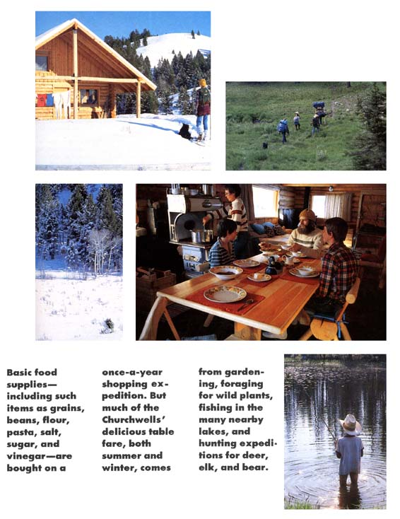
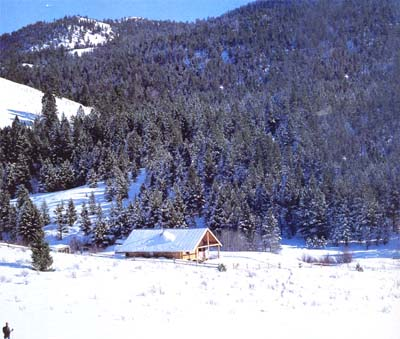
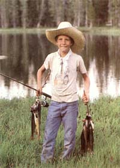

Patience and care create a very special Rocky Mountain homestead.
This year marks the 20th anniversary of MOTHER EARTH NEWS. We think it appropriate to open the year with a success story that springs directly from the roots of our publication. Perhaps there aren't many people who would want to duplicate the Churchwells'great escape, but all of us, regardless ofthe level of our current commitment to country life, can find entertainment and inspiration in their story.
-The Editors
ONCE UPON A TIME, WE-LIKE SO many others-were trapped in a lifestyle that didn't bring us pleasure. Worse yet, we were actively working at jobs we hated in order to finance our entrapment.
"Why can't we use some of our weekend activities that do bring us fulfillmenthunting, gardening, carpentry-to build a home and live off the land in the nearby mountains?" said we to us. So we stopped dreaming and started scheming. The result?
For the past four years, our family has lived under nature's jurisdiction in a remote setting high in the Idaho Rockies. Despite isolation, arctic cold, and snow that sometimes reaches our belt buckles, we are now self sufficient, thriving, and happy.
Our grand plan was to first stockpile enough money to buy property and construct a cabin. After purchasing the land we would continue to work and save until our bank balance could earn sufficient interest to provide a small income-enough to handle low monthly living expenses as well as the larger items such as property taxes, truck repairs, and auto insurance. We intended to reach a point where we'd never have to work for salaries again.
"Since we wanted no power poles polluting our scenery, we gladly eliminated the television, hair dryer, and popcorn popper from our lives."
For five grueling years we saved most of our paychecks. The fact that we were able to live on $300 a month during that period is an indication of the level of our commitment. When our finances gave us the goahead for the land, we visited the local realtor. He claimed to have just the place for us and pointed us in the general direction: "Go up from the highway on the Forest Service road for 15 miles. Watch the curves and straddle the ruts. Park your car at Sawmill Crick. Then follow the trail a mile to the realty sign. Good luck, and, oh, wear your snowshoes."
We fell in love with the place at first sight. By noon the following day we had paid cash (there would be no more buying on credit in our lives) for five acres of hillside, meadow, and forest. Once the snow melted, we discovered that the "road" to our mountain land consisted of two deep tire ruts made interesting by a difficult creek crossing. So we bought (for cash) a used four-wheel-drive "creek-Grosser." Besides providing basic transportation, this workhorse was soon called upon to shuttle building materials dumped off by the delivery trucks. The three days spent transporting 1,300 cinder blocks back to our homesite were just a small part of the price we paid for seclusion.
While frantically working and saving, we spent our weekends and vacations building. First, we put up a fence to keep out range cattle and horses. Next, we constructed a work shed and a storage but for tools, building supplies, and all our worldly goods. We also bought a 16-foot travel trailer to house us until our home was completed. And since we wanted no power poles polluting our scenery, we held a yard sale and gladly eliminated the television, hair dryer, and popcorn popper from our lives. Finally, the day arrived when we were able to quit our jobs. We moved into the trailer and onto our meadow, where we became full-time modern "homesteaders"; even then, though, it took another three years before our log cabin was livable. During that time, we weren't able to stay in the trailer much after the first snow fell, so we hitched it to the truck and spent those winters traveling throughout the sunny Southwest. By limiting our sight-seeing and staying at free campgrounds, we explored a wonderful chunk of America and kept within our budget.
We wanted our home to harmonize with its mountain environment. Logs were the obvious choice for wall construction, both for aesthetics and because of their availability and insulating qualities. Furthermore, log structures are capable of withstanding an amazing amount of stress-a good quality in an area with heavy snows and a somewhat shaky reputation (a 1983 earthquake there left two persons dead and damage that ran into the millions).
We originally planned to cut and haul our own logs out of the nearby forests of lodgepole pines. But, not having a logging truck, we found it more practical to contract with a local lumberjack to have the eightinch timbers delivered. Even that was much less expensive than purchasing ordinary milled logs.
Although the timbers had been peeled and then allowed to dry for a year, we knew they'd still undergo some settling and shrinkage. We designed our home to accommodate this. The window and door frames are keyed into the logs rather than fastened securely. And the pillars supporting the ridgepole of the roof are mounted on jacks at their bases, underneath the floor. These jacks can be let down; thus we've lowered the ridgepole as the walls have shrunk and settled. Interior walls, counters, and cupboards are freestanding and likewise keyed into the walls. Six months after the shell was completed, we measured and found the walls had settled an average of threeeighths of an inch.
Keeping the cold winter climate in mind, we spared no expense on insulation. Teninch fiberglass batts went beneath the floor and an eight-inch blanket into the ceiling. In addition, large south-facing windows invite the low winter sun into the house, and a greenhouse is attached to the southern wall. Any cloudless January day can heat the greenhouse to 70°F.
The subzero winters presented another problem. While wood floors were practical for the living room and bedrooms, we knew they'd be difficult to keep clean in the kitchen, and we learned that vinyl-type flooring wasn't guaranteed against extreme cold. A floor of local slate, which we were able to gather ourselves from the nearby talus slopes, was the solution. Even though we lacked masonry experience, a bit of study and research on our part, along with extensive coaching from the local mason, enabled us to lay a floor that's practical, durable, and attractive.
As to plumbing, we weren't eager to fight frozen pipes at minus 45°F. So, since we enjoy backwoods simplicity anyway, we chose to eliminate the dubious advantage of running water, which put a conventional toilet out of the picture. Unfortunately, we had no good location for an outhouse.
We hit the books again to research composting toilets. The manufactured one we wanted was so expensive that we built our own of plywood and 4 X 4s, had it sprayed with fiberglass at a camper-shell factory, and placed it in its own minibasement.
Because we live at 45° latitude, our short winter days provided another challenge. We didn't want to go to bed at four in the afternoon, so we installed a number of propane gas lights, which brighten up our long months of darkness for only $40 worth of fuel a season.
Once we'd moved into our rustic cottage, the next order of business was the food supply. Our high-altitude garden (elevation, 6,700 feet) would have to survive through a growing season with no traditional frost-free period. (In fact, we can expect tomatokilling cold, as well as snow, during any month of the summer.)
Again we did our research and planted only hardy, frost-resistant varieties. We didn't even consider growing corn and zucchini, and the greenhouse handles the tomatoes and peppers. All of our study has paid off. We've harvested beets, carrots, onions, garlic, lettuce, spinach, turnips, radishes, kohlrabi, horseradish, and Jerusalem artichokes. And the strawberries, raspberries, rhubarb, and bush cherries are thriving.
"Although flatland farmers can grow more bountiful gardens, we have the advantage of being able to add game animals to our larder,"
Nowadays we have the time to supplement our garden produce by foraging for wild edibles throughout the year. Purple currantsfrom which we make delicious jellygrow all around us. Wild strawberries edge the meadows and are sweeter than any cultivated variety. We steam dandelion greens and stinging nettles and are lavish with the butter. During our cross-country ski trips, we pick vitamin C-packed rose hips for tea, being careful to leave plenty for the critters who depend on this winter food supply.
Although flatland farmers can grow more bountiful gardens, we have the advantage of being able to add game animals to our larder. In fact, deer, elk, and bear constitute the bulk of our meat supply, and we aren't burdened with nursing livestock through cold, snowy winters. This economical source of calories costs us little more than $64 a year in license fees and tags, which permit us two elk, two deer, and a bear-way too much meat for our family and more than we'd ever take! We have no gasoline expense, because the truck stays home. We backpack to our hunting area right from the house and set up camp for a month; and-because our hunting, though enjoyable, is part of the business of survival and not mere sport-our success rate approaches 100%70.
After a beast is field-dressed, it's quartered and packed home on our backs. Very little is left behind for the coyotes.
So what do we do with all that time we don't have to spend milking cows and slopping hogs? You'll find us backpacking to the many nearby lakes, fishing the summer away.
We live 25 miles from a one-doctor town and 175 miles from the nearest Big Mac, and our truck hibernates in a den of snow for six months each year. So obviously we don't run down to the corner grocer for a cup of flour. In fact, this level of isolation calls for copious listmaking. We make one trip a month to town during the summer for library books, laundering, and small purchases. Once a year we travel to the city for supplies. All of our grains and beans come from a single annual order from a food co-op, so we try to obtain as much as possible at that time (see sidebar). Since these items will keep, we prefer to overorder rather than be caught short in winter. When items are overlooked or underordered, we try to improvise. Mailorder catalogs offer another means of making up for mistakes. (We do get mail, delivered-by snowmobile in winter-a mile from the house, three times a week.) When all else fails, well, it's amazing what one can do without.
A more serious aspect of our isolation is the possibility of a medical emergency during our snowed-in phase, when professional treatment would involve a 10mile crosscountry ski trip to our nearest neighbor and, from there, a fair drive on the plowed road to town. Therefore, when snowbound, we try to eliminate all accidentmakers (such as the chain saw) from our lives. But should a finger get carved instead of a roast, we can run to our industrialstrength first-aid kit for sutures, antibiotics, and prescription painkillers.
Snow-trapped as we are all winter, people often ask, "How do the kids get to school?" This leads to our favorite success story. We've been home-schooling our two boys (ages 12 and 14) for the past four years. To comply with Idaho law, we use standard textbooks. But because of the one studentone teacher advantage, a year's formal education is usually completed in four months. Then the boys are free to really learn.
Without television, their idle time is spent reading everything from National Geographic to The Grapes of Wrath. House construction and furniture building-mathematics in action-become woodshop classes. And rebuilding the truck engine doubles as auto mechanics. Because their time isn't monopolized by the classroom, the boys are free to investigate nearby meadows and ponds.
Field guides on birds, bugs, and flowers are packed with their lunches. And since hunting is a family affair, gutting a deer becomes an anatomy lesson.
This is not the end of our story. We're still learning and growing into independence. Next year we'll try beekeeping. And we sometimes wonder if we couldn't go back to a horse and buckboard for all our transportation needs!
There will, of course, continue to be problems and solutions and compromises and even (gasp!) failures. No lifestyle comes with a guarantee. Each is equipped with its own set of difficulties. Our headaches are unique to us, though, and we'll deal with them in our own way. But there's one lesson we've learned that has been a sort of golden rule: Success in homesteading comes from molding a lifestyle around an area's resources and maintaining respect for the environment's limitations.
HERE'S THE BASIC SHOPPING LIST for our family of four: 50 pounds each: wheat berries (for sprouts and cereal), dried whole corn (ground for cereal, etc.), wheat bran, bulgur wheat, cornmeal, short-grain brown rice, barley flakes, black turtle beans, garbanzo beans, great northern beans, kidney beans, baby white limas, navy beans, pinto beans, blackeyed peas, green split peas, green lentils; 25 pounds each: pearled barley, popcorn, rye flour; 250 pounds regular rolled oats; 700 pounds whole wheat flour; 20 pounds each: linguini, spaghetti noodles, vermicelli, pasta shells; 5 pounds dry active yeast; 2 gallons mayonnaise; 100 pounds sugar; 60 pounds salt (some of this is for corning venison); 8 gallons syrup; 1 gallon mustard; 24 pounds dried milk; 4 gallons each: vinegar, vegetable oil; 4 pounds baking soda (used for baking and brushing teeth); 24 ounces coffee; 16 ounces Postum (a healthful coffee substitute); 1 roll each: plastic wrap, foil, freezer bags, freezer wrap, paper towels; 2 cases toilet paper; 3 quarts dishwashing detergent; 10 pounds laundry detergent; 1 case kitchen matches; 2 gallons shampoo.
|
 |
 |
 |